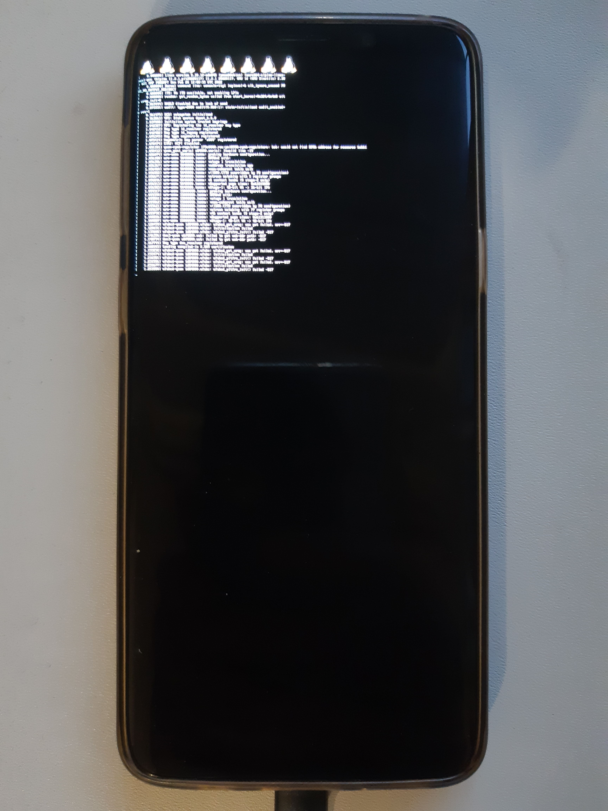

Samsung Galaxy S9 (samsung-starqltechn)
|
 SM-G9600 | |
| Manufacturer | Samsung |
|---|---|
| Name | Galaxy S9 (SM-G9600/DS) |
| Codename | samsung-starqltechn |
| Released | 2018 |
| Category | testing |
| Original software | Android |
| Original version | 8 |
| Extended version | 10 |
| Hardware | |
| Chipset | Qualcomm Snapdragon 845 (SDM845) |
| CPU | Octa-core (4x 2.8 GHz Kryo 385 Gold & 4x 1.7 GHz Kryo 385 Silver) |
| GPU | Adreno 630 |
| Display | 5.8 inch 18.5:9, 2960 x 1440 pixel 568 PPI, capacitive touchscreen, 10 multi-touch points, Super AMOLED, Corning Gorilla Glass 5, glossy: yes |
| Storage | 64 GB |
| Memory | 4 GB |
| Architecture | aarch64 |
{kind=link}
| USB Networking |
Works
|
|---|---|
| Flashing |
Broken
|
| Touchscreen | |
| Display |
Broken
|
| WiFi |
Broken
|
| FDE | |
| Mainline | |
| Battery | |
| 3D Acceleration | |
| Audio | |
| Bluetooth | |
| Camera | |
| GPS | |
| Mobile data | |
| SMS | |
| Calls | |
| USB OTG | |
| NFC | |
| Accelerometer | |
|---|---|
| Magnetometer | |
| Ambient Light | |
| Proximity | |
| Hall Effect | |
| Barometer | |
| Power Sensor | |
| Camera Flash | |
|---|---|
| Keyboard | |
| Touchpad | |
| USB-A | |
| HDMI/DP | |
| Ir TX | |
| Ir RX | |
| Stylus | |
| Haptics | |
| Ethernet | |
| FOSS bootloader | |
| Primary Bootloader |
Broken
|
|---|---|
| Secondary Bootloader |
Works
|
| Mainline |
Works
|
| Internal Storage | |
| SD card | |
| USB Host | |
| USB Peripheral | |
| Display | |
| Keyboard |
Unavailable
|
| Buttons |
Works
|
Contributors
- dsankouski
Maintainer(s)
Users owning this device
- Dsankouski
- Zephyr1112 (Notes: AOSP 11, 4/64GB)
How to enter flash mode
Hold Power + Volume Down + Bixby until screen shows vendor logo. Use Odin or Heimdall to flash.
Installation
Flash boot image from TWRP
adb push $BOOT_IMAGE_PATH /tmp/boot.img && adb -d shell 'dd of=/dev/block/platform/soc/1d84000.ufshc/by-name/boot if=/tmp/boot.img'
Mainline
Mainline kernel can be booted with stock bootloader or u-boot. Logs may be viewed from pstore(ramoops) or simple framebuffer.
Status
- Green lines - works
- Blue - in progress
- Red - backlog
Roadmap
- boots
- framebuffer
- storage, both main and sdcard
- touchscreen driver (dsankouski)
- muic driver(max77705), at least detect usb cable
- assemble firmware package in aports
- wifi (dsankouski)
- bluetooth
- display panel driver
Assembling boot image
- clone mainline sources
- build kernel. See also Compiling_kernels_with_envkernel.sh
- append dtb to gzipped kernel image
- pushd .output/arch/arm64/boot
cat Image.gz dts/qcom/sdm845-samsung-starqltechn.dtb > Image.gz-dtb
- generate initramfs image
- make android bootimage
mkbootimg --base 0x0 --kernel_offset 0x00008000 --ramdisk_offset 0x02000000 --tags_offset 0x01e00000 --pagesize 4096 --second_offset 0x00f00000 --ramdisk "$INITRAMFS" --kernel Image.gz-dtb -o boot.img
U-boot
Has support in main tree, can boot PostmarketOS and Android.
See also u-boot sdm845 docs
Notes
Uart
`/dev/ttyHS8` can be exposed on USB D+D- lines. It's configured in data mover mode by downstream kernel.
Getting logs from pstore
Boot to twrp, and check /sys/fs/pstore folder
Stock bootloader
Loads payload into ram at random physical address for security reason. Initramfs physical load address is 0xa2000000 both for boot image and recovery image